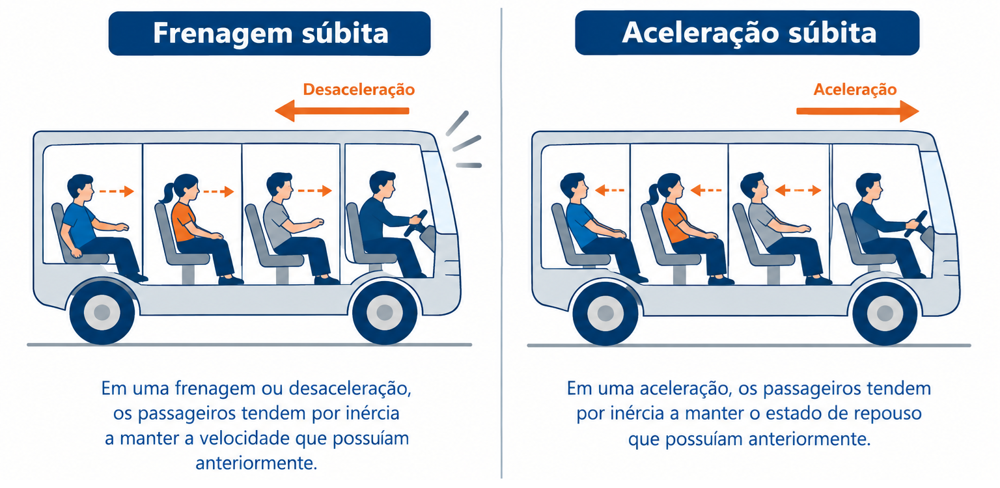
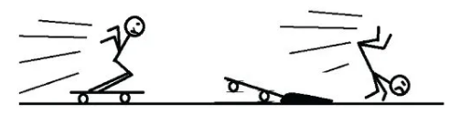
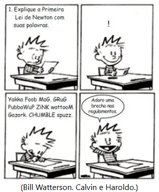

1º Ano | Aula 16: 1ª Lei de Newton (Lei da Inércia)
📚 Resumo
A 1ª Lei de Newton (Princípio da Inércia) afirma que um corpo tende a manter seu estado de repouso ou de movimento retilíneo uniforme (MRU), a menos que seja atuado por uma força resultante externa não nula.
Massa: É a medida quantitativa da inércia de um corpo.
📖 1ª Lei de Newton: A Lei da Inércia
1. O Conceito de Inércia
Inércia é a propriedade da matéria de resistir a variações em seu estado de movimento. Corpos de maior massa possuem maior inércia, ou seja, oferecem maior resistência a serem acelerados ou freados.

Figura 1: Em uma frenagem ou aceleração, os passageiros tendem por inércia a manter a velocidade que possuíam anteriormente.
2. Condição de Equilíbrio ($\vec{F}_{res} = 0$)
Quando a força resultante sobre um corpo é igual a zero ($\vec{F}_{res} = 0$), o corpo está em equilíbrio. Existem dois tipos de equilíbrio:
Equilíbrio Estático: O corpo está em repouso ($\vec{v} = 0$).
Equilíbrio Dinâmico: O corpo move-se em linha reta com velocidade constante (MRU, $\vec{v} \neq 0$).
3. Referenciais Inerciais
A 1ª Lei de Newton é válida apenas em referenciais inerciais, que são sistemas de referência que estão em repouso ou em movimento retilíneo uniforme entre si (sem aceleração).
💡 Física em Ação
🚗 Cinto de Segurança
Em uma colisão, o automóvel para bruscamente, mas os passageiros tendem a continuar em movimento retilíneo uniforme por inércia. O cinto exerce a força necessária para alterar esse movimento e proteger o ocupante.
🚀 Sondas Espaciais
No espaço profundo, longe da gravidade de estrelas e sem atrito atmosférico, uma sonda espacial desligada continua se movendo indefinitidamente em linha reta e com velocidade constante sem gastar combustível.
✅ 5 Questões Resolvidas (R 1 a 5)
R 1: Frenagem do Ônibus
Enunciado: Por que os passageiros de um ônibus em alta velocidade são projetados para frente quando o motorista pisa bruscamente no freio?
Resolução: Devido à inércia. Como os passageiros estavam se movendo junto com o ônibus, a tendência natural dos seus corpos é manter o movimento para a frente com a mesma velocidade que tinham antes da frenagem.
R 2: Conceito de Equilíbrio
Enunciado: Um livro de $2\text{ kg}$ está parado sobre uma mesa horizontal. A força resultante sobre ele é nula?
Resolução: Sim. Como o livro está em repouso (equilíbrio estático), a força peso atua para baixo e a força normal para cima com o mesmo módulo, cancelando-se. Logo, $\vec{F}_{res} = 0$.
R 3: Movimento no Espaço
Enunciado: Um objeto lançado no espaço intergaláctico, longe de qualquer influência gravitacional e atrito, necessita de propulsão contínua para manter seu movimento?
Resolução: Não. Pela 1ª Lei de Newton, na ausência de forças resultantes externas ($\vec{F}_{res} = 0$), o corpo permanecerá em Movimento Retilíneo Uniforme (MRU) por inércia, sem precisar de combustível.
R 4: Curva e Inércia
Enunciado: Quando um carro faz uma curva fechada para a esquerda, para onde os passageiros parecem ser "jogados"? Por quê?
Resolução: Eles tendem a ser projetados para a direita. Pela lei da inércia, os passageiros tendem a manter a trajetória reta original. Como o carro vira para a esquerda, a lateral direita do veículo vai ao encontro deles.
R 5: Relação entre Massa e Inércia
Enunciado: O que exige maior força para alterar o estado de repouso: um carrinho de supermercado vazio ou um cheio? Justifique.
Resolução: O carrinho cheio. Como a massa é a medida quantitativa da inércia, quanto maior a massa de um corpo, maior é a sua resistência a variações de velocidade (maior inércia).
✍️ 5 Questões Propostas (P 6 a 10)
P 6: Arrancada Brusca
Enunciado: Explique o que acontece com a cabeça de um motorista parado no sinal quando seu carro é atingido bruscamente por trás por outro veículo.
Resolução: Por inércia, a cabeça tende a permanecer em repouso. Como o tronco é impulsionado para a frente pelo banco do carro, a cabeça aparenta ir para trás (efeito "chicote"), motivo pelo qual o encosto de cabeça é obrigatório.
P 7: Pano de Mesa
Enunciado: Um mágico puxa rapidamente a toalha de uma mesa cheia de pratos sem derrubá-los. Qual conceito da Física explica esse fenômeno?
Resolução: A 1ª Lei de Newton (Inércia). Ao aplicar uma força rápida na toalha, o tempo de interação e o atrito são mínimos, permitindo que os pratos permaneçam em repouso devido à sua inércia.
P 8: Patinador no Gelo
Enunciado: Um patinador desliza em uma pista de gelo ideal (sem atrito) com velocidade constante de $5\text{ m/s}$. Qual é a força resultante aplicada sobre ele?
Resolução: Como a velocidade é constante e o movimento é retilíneo (MRU), o patinador está em equilíbrio dinâmico. Portanto, a força resultante é zero ($\vec{F}_{res} = 0$).
P 9: Moeda no Copo
Enunciado: Uma moeda repousa sobre um cartão de papel em cima de um copo. Se dermos um peteleco horizontal no cartão, a moeda cai dentro do copo. Por quê?
Resolução: O peteleco aplica força apenas no cartão. A moeda, por inércia, tende a permanecer em repouso na sua posição. Sem o cartão para sustentá-la, a gravidade a faz cair dentro do copo.
P 10: Gotas de Guarda-Chuva
Enunciado: Para tirar a água de um guarda-chuva molhado, nós o sacudimos rapidamente e o paramos de estalo. Como a inércia atua nesse caso?
Resolução: As gotas entram em movimento junto com o guarda-chuva. Quando o guarda-chuva para abruptamente, as gotas mantêm seu movimento para a frente por inércia, se desligando do tecido.
🎓 TESTES (T 11 a 15)
T 11: (UNESP) Cinto de Segurança
As estatísticas indicam que o uso de cinto de segurança deve ser obrigatório para prevenir lesões mais graves em motoristas e passageiros no caso de acidentes. Fisicamente, a função do cinto está relacionada com a:
A) Primeira Lei de Newton.
B) Lei de Snell.
C) Lei de Ampère.
D) Lei de Ohm.
E) Primeira Lei de Kepler.
Resolução: Alternativa A.
Em uma colisão ou frenagem brusca, os ocupantes tendem a manter seu movimento por inércia. O cinto aplica a força externa necessária para alterar esse estado, como prevê a Primeira Lei de Newton.
T 12: (CEFET-MG) Queda no Skate
A imagem mostra um garoto sobre um skate em movimento com velocidade constante que, em seguida, choca-se com um obstáculo e cai. A queda do garoto justifica-se devido à(ao):

A) princípio da inércia.
B) ação de uma força externa.
C) princípio da ação e reação.
D) força de atrito exercida pelo obstáculo.
Resolução: Alternativa A.
O obstáculo interrompe o movimento do skate ao aplicar uma força sobre ele, mas o garoto continua seu movimento para a frente devido ao princípio da inércia.
T 13: (UNIRG-TO) "Força de Inércia"
As pessoas costumam dizer que, quando um carro freia, uma “força de inércia” atua sobre elas, jogando-as para frente. Essa afirmação está errada, pois essa tendência de continuar em movimento, que a pessoa sente, não é proveniente de uma força, mas sim:
A) da inércia, que é uma propriedade física da matéria.
B) da energia potencial gravitacional, que se mantém constante.
C) do par ação e reação, que surge entre o banco do carro e a pessoa.
D) do atrito, que tende a frear o carro, mas não a pessoa.
Resolução: Alternativa A.
A inércia não é uma força, mas sim uma propriedade da matéria de resistir a mudanças em seu estado de movimento.
T 14: (UNIFOR-CE) Rotação da Terra
O que aconteceria se de repente a Terra parasse de girar ao redor do seu eixo? Ao parar a Terra inesperadamente, as casas, as pessoas, as árvores, os animais e tudo o que não esteja ligado firmemente à Terra sairá a voar pela tangente com a velocidade de um projétil. A origem dessa tragédia tem uma explicação simples e está:
A) no efeito relativístico do movimento de rotação da terra.
B) no princípio de que todo corpo que possui massa sofre os efeitos do princípio da inércia.
C) nas leis da termodinâmica, devido a uma redução de pressão na superfície.
D) no fato de que a terra passaria a repelir os corpos por ação gravitacional.
E) no princípio da conservação da energia mecânica.
Resolução: Alternativa B.
Como tudo na superfície da Terra se move junto com o planeta no movimento de rotação, se o planeta parar bruscamente, os corpos soltos tendem a continuar em movimento tangencial por inércia.
T 15: (Unicastelo-SP) Aplicação da 1ª Lei de Newton

Assinale a alternativa que contém um exemplo de aplicação da Primeira Lei de Newton:
A) Um livro apoiado sobre uma mesa horizontal é empurrado horizontalmente para a direita com uma força de mesma intensidade da força de atrito que atua sobre ele, mantendo-o em movimento retilíneo e uniforme.
B) Quando um tenista acerta uma bola com sua raquete, exerce nela uma força de mesma direção e intensidade da que a bola exerce na raquete, mas de sentido oposto.
C) Em uma colisão entre duas bolas de bilhar, a quantidade de movimento do sistema formado por elas imediatamente depois da colisão é igual à quantidade de movimento do sistema imediatamente antes da colisão.
D) Em um sistema de corpos onde forças não conservativas não realizam trabalho, só pode ocorrer transformação de energia potencial em cinética ou de energia cinética em potencial.
E) Se a força resultante que atua sobre um carrinho de supermercado enquanto ele se move tiver sua intensidade dobrada, a aceleração imposta a ele também terá sua intensidade dobrada.
Resolução: Alternativa A.
Como a força aplicada possui a mesma intensidade da força de atrito mas em sentido oposto, a força resultante sobre o livro é nula ($\vec{F}_{res} = 0$). Pela Primeira Lei de Newton (Princípio da Inércia), um corpo sob resultante nula permanece em Movimento Retilíneo Uniforme (MRU).
Análise das outras alternativas:
- B refere-se à 3ª Lei de Newton (Ação e Reação).
- C refere-se à Conservação da Quantidade de Movimento.
- D refere-se à Conservação da Energia Mecânica.
- E refere-se à 2ª Lei de Newton ($F = m \cdot a$).